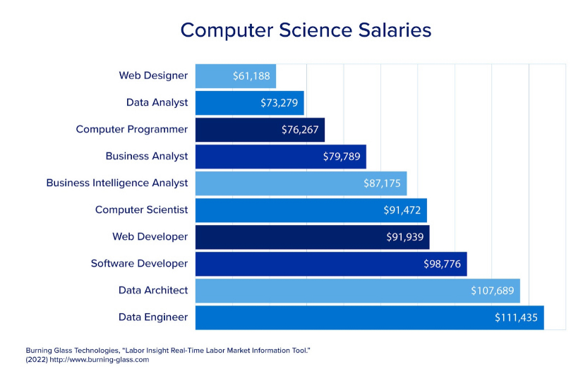

Job Market for Computer Science Careers
Employment Outlook
Computer science careers continue to grow rapidly as technology becomes more important in every industry. Jobs in software development, cybersecurity, data analysis, and artificial intelligence are in high demand. Many companies are expanding their digital systems, which increases the need for skilled computer science professionals. Overall, the job outlook is strong, with steady growth expected over the next decade.
Job Availability
Computer science jobs are available in a wide range of workplaces, including technology companies, hospitals, schools, government agencies, financial institutions, and research organizations. Remote work has also become more common, allowing computer scientists to work from home or collaborate with teams across the country. Entry-level positions are often available for graduates with strong technical skills and project experience.
Salary Expectations
Computer science careers generally offer competitive salaries due to the high demand for technical skills. Entry-level positions typically pay well compared to many other fields, and salaries increase with experience, specialized skills, and advanced education. Roles in cybersecurity, software engineering, and data science often provide some of the highest earnings in the field.
Future Trends
The future job market for computer science is expected to grow as new technologies emerge. Artificial intelligence, machine learning, cloud computing, and cybersecurity are becoming major areas of focus. As businesses rely more on digital tools and data, computer scientists will continue to play an important role in developing secure, efficient, and innovative systems.
